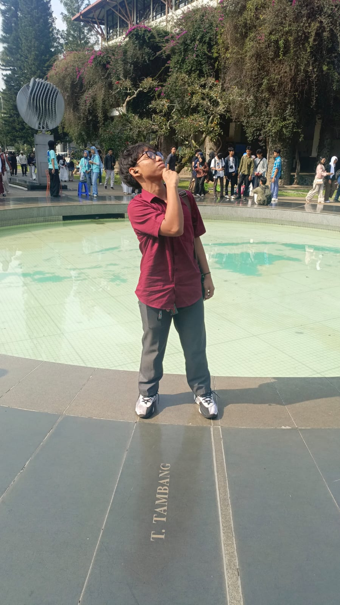
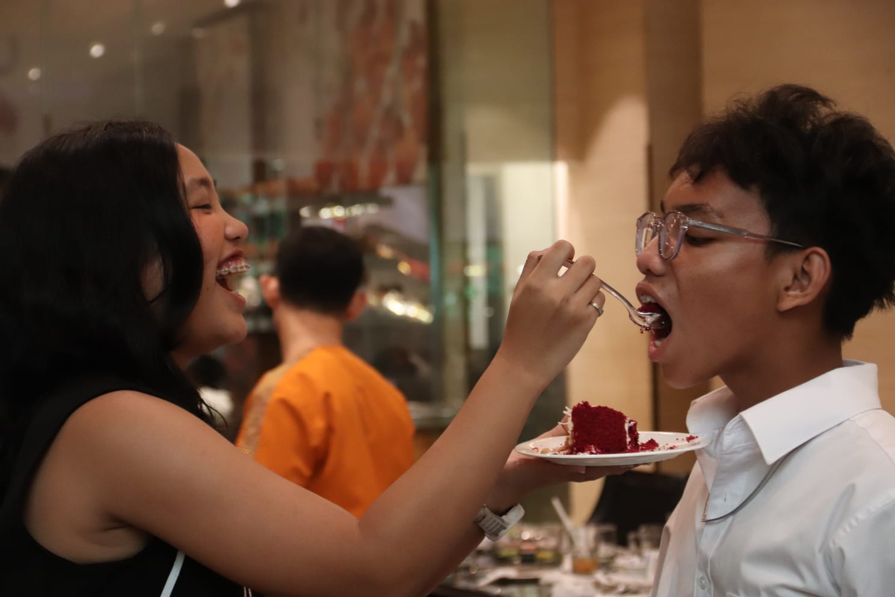
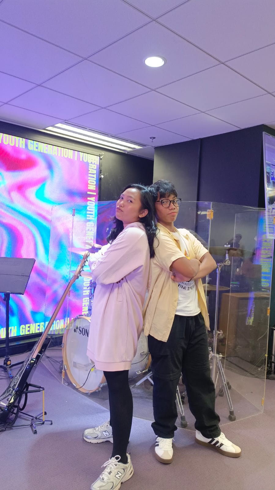
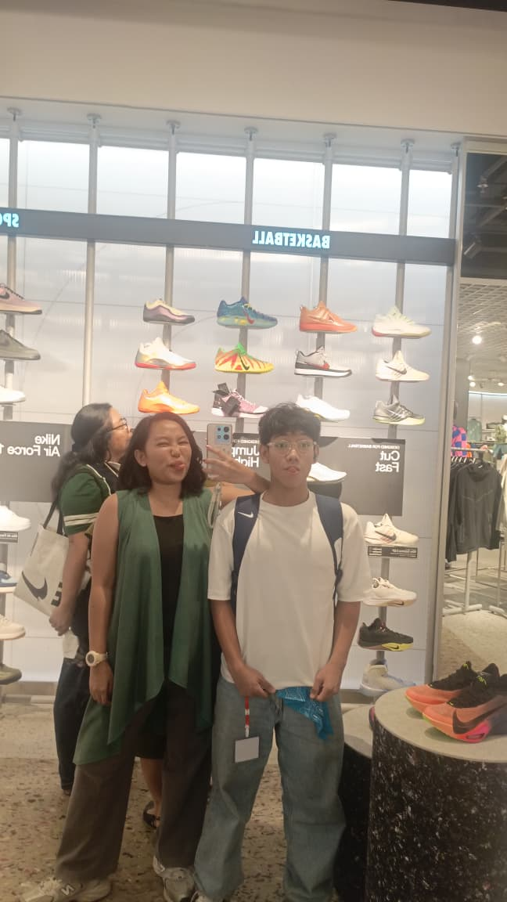
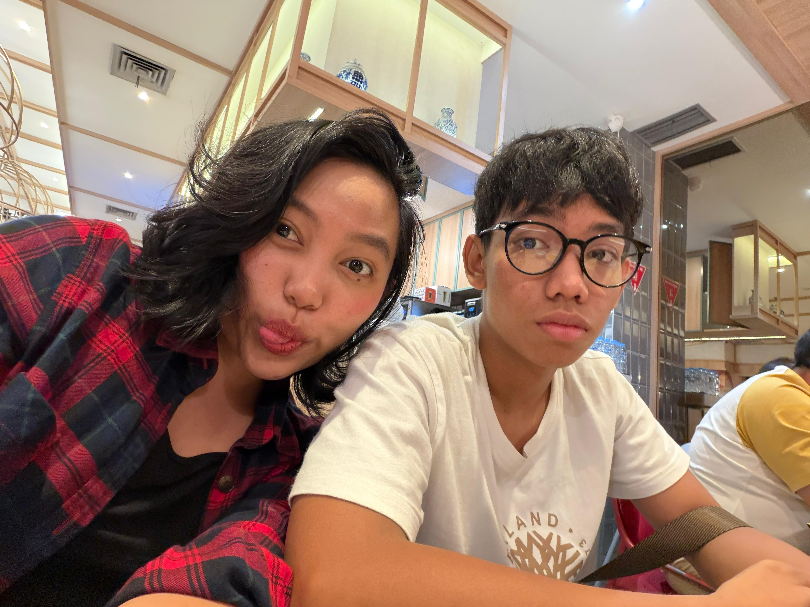

SELAMAT 17 TAHUN, BRO!
"Umur doang 17, kelakuan masih kayak sisa kembalian warung.
Selamat sudah official masuk kartu keluarga sebagai warga dewasa!"

A Letter For You
From: Your Loving SisterDear David Junior,
Selamat ulang tahun yang ke-17! Rasanya baru kemarin kita sering rebutan bantal guling dan main bareng, sekarang kamu sudah resmi memasuki usia Sweet Seventeen.
Di umur yang baru ini, kakak mau bilang kalau kakak bangga punya adik kayak kamu. Kamu bukan cuma sekadar adik kakak, tapiu kamu juga jadi teman ngobrol dan pelawak kakak. Kakak berharap semakin kamu dewasa kamu bisa memposisikan dirimu sebagai satu-satu laki-laki yang ada di rumah, yang menjadi tangan kanan mama, terutama pengganti papa ya dek.
Kakak juga dukung kamu dalam doa buat setiap pergumulanmu, apalagi bentar lagi mau persiapan kelas 12. Kakak berharap kamu kalau mau sesuatu, you will search and execute it as hard as you could. Dapatin kuliah itu gk gampang dek, kakak juga perjuangan, jadi jangan dianggap sepele ya dek plus kamu tuh dipandang sebagai abang buat Noah, Ben sama Daud, so be a good example to them.
Once again, happy birthday my lil D, kakak kangen banget sama kamu, banyak yg kakak rinduin dari kamu selama kakak di surabaya. Mulai dari pelayanan bareng, main bareng sampai jalan bareng. Kakak sih mau banget di telp terus sama naya yaa... (code keras) hehehe.
Love u a lot ya dek, hanya ini sama kado kecil yang bisa kakak kasih sama kamu yaa...
Btw dibawah bbrp foto yang menurut kakak jadi memori nih hehe
With lots of love,
Your Big Sister ❤️
Our Scrapbook

Kakak's Sweet 17 🎈
Bandung Trip ✈️

Ignite Youth FOMO 🎬
Dislok tetap Tiktok-an 🎬

Mirror Selfie ✨
ORG SIBUK 🎬
My Ignite Fest PA 🎈
Lagi Firman 🎬
First Win ✨
Aib Berjalan 🎬

Dinner Pic ✨
Nonton DBL 🎬
First XXI after Paps passed 🎈
Ngejek Diri Sendiri 🎬
Sending Me Off to SBY ✈️
Mandi ESSSS 🎬
Clingy Moment ✨
Anomali SFH 🎬